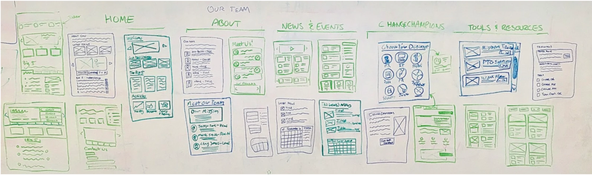
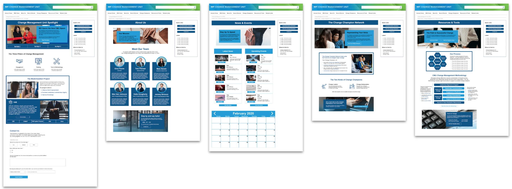
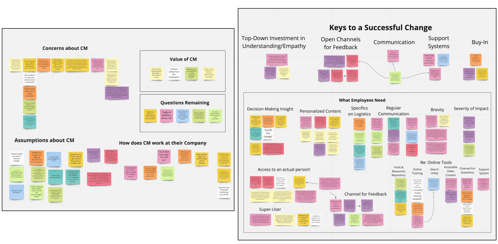
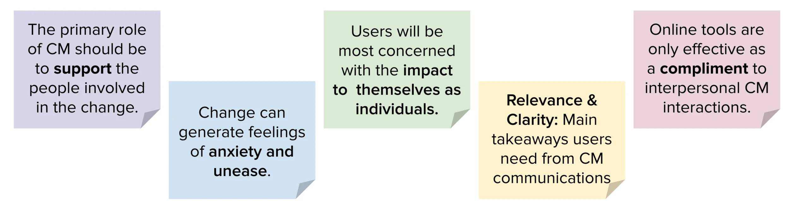
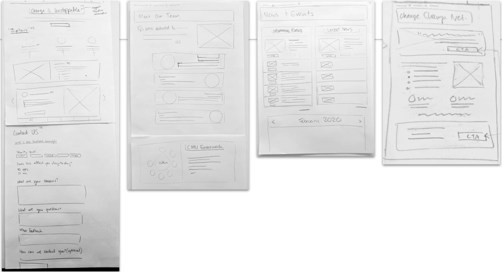
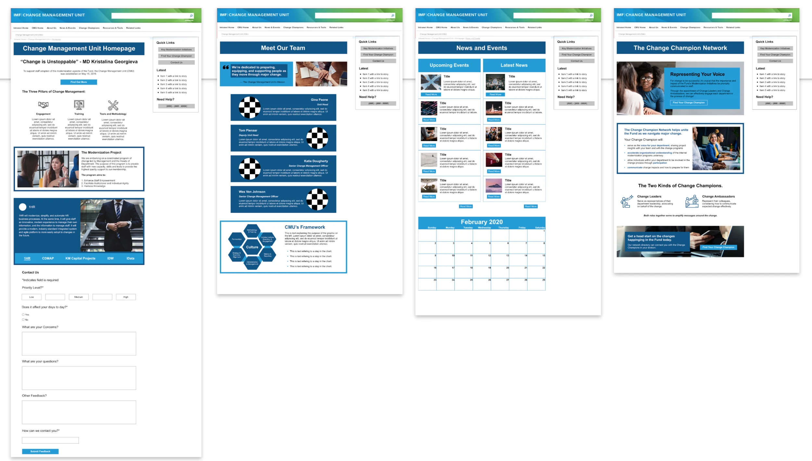
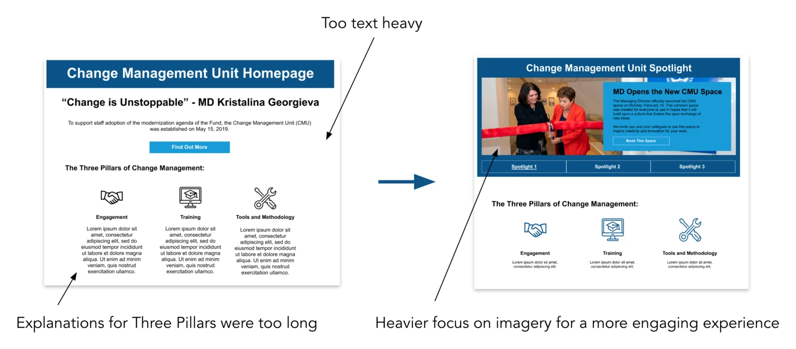
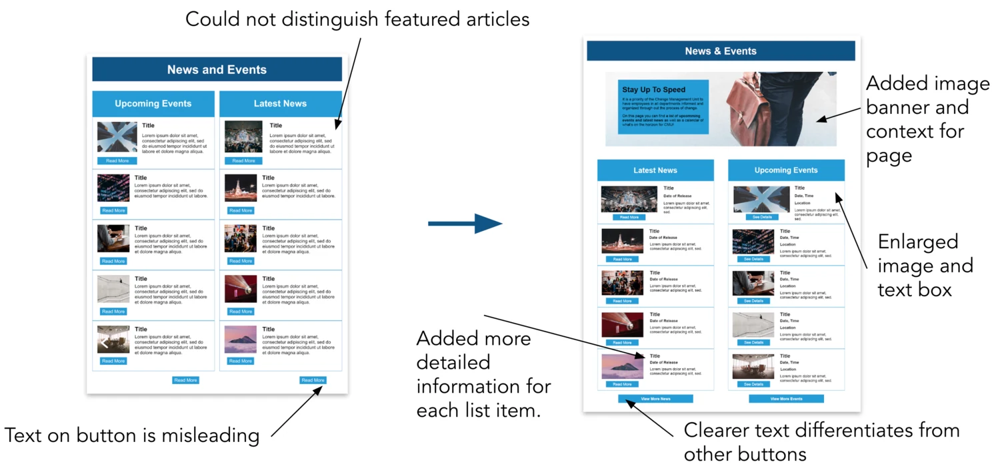
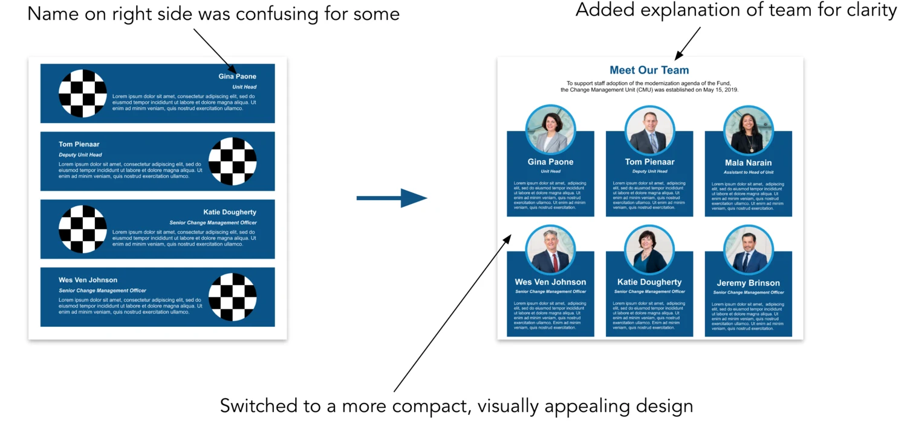
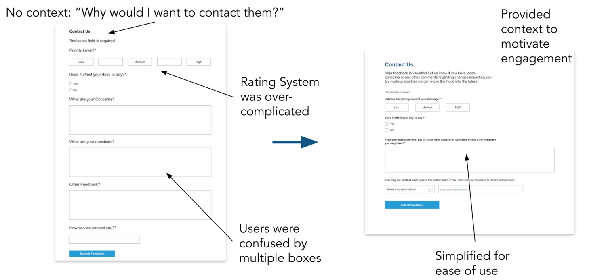

The IMF intranet, and UX under heavy constraints
Making room for UX when there isn’t any.
- Client
- The International Monetary Fund
- Team
- 3 UX designers
- Time
- 2 weeks, 8 business days
- Tools
- Figma, Illustrator, Photoshop, InVision

The short version
About a minuteThe problem
The intranet site for the IMF’s Change Management Unit was unfinished. It was missing a lot of information and essential features, and it was hard to look at and harder to navigate. Our brief was to redesign it so employees could find what they needed.
The constraints
The intranet ran on a 2010 version of SharePoint. Arial was the only font, components were limited to a few pre-built templates, the header couldn’t change, and a sidebox had to sit on the right. IMF policy kept us from seeing the current site or speaking to any employee beyond our single point of contact. Most of the content hadn’t been written. We had 8 business days, and the final files had to be Photoshop PSDs.
What we did
With no access to end users, we interviewed 13 people who had been through change management at other organizations, backed that up with secondary research, and grouped what we heard into insights. Then we whiteboarded, sketched, prototyped in Figma, tested with 6 people, folded in the client’s feedback, and rebuilt the final designs in Photoshop for the IMF’s IT team.
The result
We delivered the final page designs as PSDs inside the eight days, along with a list of improvements that didn’t fit the timeline.

That’s the essential part. The full case study has 6 more sections on research, process and design decisions.
Background
I worked alongside two other UX designers on this project for the International Monetary Fund. I had previously been asked to evaluate the IMF’s 2019 annual report. This time the work was user experience and visual design for an internal intranet site used by IMF employees, the site of the Change Management Unit (CMU).
The design files are still online: final designs in InVision and wireframes in Figma.
Research without the users
We wanted to understand how employees going through change behave, and what they don’t understand, when they turn to a change management team. The site needed to be easy to navigate, teach people the CM policies, and encourage them to use the CMU’s resources.
The plan had to work without access to actual end users, on a short timeline, with the least time spent for the most insight. We used two methods: secondary research and short form interviews.
Secondary research
We looked for best practices for implementing change management, articles on what successful change requires, and case studies of badly managed change. Our sources were Prosci, the UC Berkeley change management toolkit and Harvard Business Review.
- Change management is about changing people’s behavior, and people are the most important factor.
- Buy in is crucial. Employees need to understand the reasons for a change before they get behind it.
- There has to be a clear vision and clear goals.
- Open communication between employees and the people directing the change is essential.
- The most effective way to communicate is to explain how the change affects each person, more than the big picture.
Interviews
We spoke with 13 participants aged 24 to 57, five women and eight men, all with corporate experience of change management. They came from finance, broadcast tech, telecoms, medical research, hospitality, banking, healthcare, federal consulting, retail management, private equity and home security.
Then we affinity mapped the results. People told us that success depends on stakeholder buy in, empathy from leadership, open channels for feedback, and support through the whole change cycle. Employees want access to an actual person, content that’s relevant to them, and upfront information on how they will be affected. And an intranet can’t replace person to person contact.
The needs came down to five words: brevity, efficiency, specifics, relevance and support.


From whiteboard to prototype
The process went through four stages: a whiteboarding session, low fidelity sketches, a medium fidelity prototype and the final prototype.
Whiteboarding let each of us share and critique ideas quickly. After presenting our sketches to each other we could say which features and layouts worked and which didn’t, and that gave us the content structure for the low fidelity sketches.

Digital prototype #1
We built the first digital prototype in Figma. Many things changed before the final version, but this was the base we iterated on. It had to respect the intranet’s rules: no changes to the header, every major element already in the IMF library, Arial only, and a sidebox on the right. It also had to be something the IT team could build very quickly.

Feedback, testing and iteration
The client reviewed the design and asked for a more obvious connection between content and the header above it, a more formal explanation at the top of the About page, a landing page that focuses on imagery more than text, the CMU headquarters address in the sidebar in place of the phone number, and a new Resources and Tools page to hold the process graphic.
We also ran usability tests with 6 people. We used general users, since you don’t have to work at the IMF to judge whether a site is navigable and clear. We wanted to see whether they could recognize the major features and tell what each page was about at a glance.
Pressed for time, we ranked the responses from highest priority to lowest and worked down the list. Much of the redesign was about raising fidelity, rearranging content, and keeping the pages consistent, with an image banner and a short blurb at the top of each one.




Final designs
After those changes we finished polishing the prototypes in Figma, then rebuilt the design in Photoshop to meet the request of the IMF’s IT team.
If we’d had more time
Several ideas came out of the research that weren’t realistic in eight days.
- A search bar specific to the CMU pages, so people can search news, events, resources, tools and people.
- An expanded contact form, to bring in better feedback and involve people who want to reach the CMU team.
- Accounts and tagging, so people own their feedback and can find the events and stories relevant to them.
- A modernized style: IMF style guide fonts in place of Arial, cleaner page elements, a more interactive calendar, and a sidebar that stays pinned while you scroll.